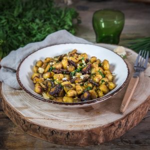

Poêlée de gnocchis aux champignons

Aujourd’hui c’est avec une recette que je trouve idéale pour cette saison d’automne que je retrouve en vous proposant une poêlée de gnocchis aux champignons parmesan et fanes!
Contrairement à d’habitude, cette fois-ci je n’ai pas voulu préparer mes gnocchis dans une crème ou dans une « sauce », j’ai préféré les cuire puis les faire revenir directement avec la garniture comme une sorte de poêlée et nous nous sommes régalés (pour ceux qui veulent la recette des gnocchis dans une crème de parmesan et aux champignons c’est par ICI)! J’avais envie d’automne, de champignons, de gnocchis et j’avais acheté une magnifique botte de fanes (je trouve ça tellement beau!) alors je me suis lancée dans une nouvelle recette en écoutant nos envies du moment!
A la base, on voulait faire une crème de parmesan que l’on a finalement trouvée un peu trop « classique » et j’avais vraiment envie de sentir le goût des fanes et des champignons alors j’ai choisi de faire poêler mes gnocchis cuits dans la garniture et le résultat était vraiment, vraiment délicieux!!! Un peu d’ail, de curcuma, de ciboulette, de parmesan et d’huile d’olive pour assaisonner tout ça c’était exactement ce qu’il nous fallait (j’ai d’ailleurs refait cette recette deux fois dans la même semaine^^). Si vous n’avez pas le temps de faire vos gnocchis maison (ce que je comprends largement vu le temps que ça prend) achetez des gnocchis frais classiques que vous cuirez dans de l’eau bouillante salée pour ensuite les poêler. Pas besoin d’acheter les gnocchis « à poêler » donc car je trouve qu’ils s’imprègnent beaucoup moins des épices, des saveurs etc… (du moins selon ma propre expérience^^) et pour cette recette c’est ce que l’on souhaite avant tout!
Cette recette de poêlée est très rapide, n’a pas de choses particulières et complexes au contraire pour un repas de midi à préparer rapidement c’est idéal car les gnocchis sont assez rapides à cuire (le plus long ici c’est de couper les fanes et les champignons). Je vous laisse découvrir tout ça plus bas et je vous dis à très vite avec un nouvel article! Bonne journée!!
Enregistrer
Enregistrer
Ingrédients
- Gnocchis - 500g
- Champignons de votre choix (ici champignons de paris) - 300g
- Fanes (ou carottes) - 3
- Ail - 1 gousse
- Parmesan - 45g
- Curcuma - 1 càs
- Ciboulette - Quelques brins
- Sel, poivre noir
- Huile d'olive
Instructions
- Couper les fanes (ou carottes) en fines rondelles
- Couper les champignons
- Faire revenir les rondelles de fanes 10 minutes dans votre poêle avec de l'huile d'olive.
- Remuer régulièrement pour qu'elles ne noircissent pas et ne s'accrochent pas à la poêle Les fanes (ou les carottes) doivent être cuites mais toujours un peu fermes, on ne veut des fanes "trop molles" pour éviter l'effet "purée" donc pensez à surveiller la cuisson
- Saler, poivrer et ajouter le curcuma
- Ajouter les champignons aux carottes, l'ail écrasé et un peu de ciboulette ciselée
- Si nécessaire ajoutez à nouveau un filet d’huile d’olive
- Pendant ce temps, cuire vos gnocchis comme indiqué sur le paquet
- Égoutter les gnocchis
- Ajoutez-les dans la poêle jusqu'à ce qu'ils dorent
- Rectifier l’assaisonnement
- Râper du parmesan au-dessus du mélange avant de servir
- Bon appétit !
Les tips de la communauté
Ajustements signalés
- ABSOLUMENT QUE L’ON ESSAYE ! Miam !